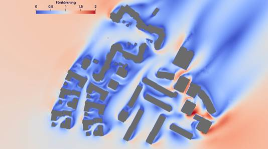

Case Study
Questions
What is
What problem do
Objectives
introduce the basics of OpenFOAM
Instructor note
15 min teaching
0 min exercises
Stockholm
This case uses OpenFOAM to calculate the wind fields around complex environments
with unknown influence from e.g. irregular buildings, focusing on
pedestrian-level wind (wind comfort) and wind loads on buildings,
teaching key CFD skills like setting up Atmospheric Boundary Layer (ABL)
conditions, using snappyHexMesh for complex geometries,
and applying solvers to understand wind patterns,
recirculation zones, and pressure distributions.

Run the case step by step
Let us copy the case from the repository
$ cp -r /PATH/XXXXXXstockholm .
The structure of the case is as follows:
$ cd stockholm
$ ls
0.orig Allclean Allrun constant system
$ tree
.
├── 0.orig (time directory starting with T=0, initial conditions)
│ ├── U
│ ├── epsilon
│ ├── include
│ │ └── ABLConditions
│ ├── k (turbulence kenetic energy)
│ ├── nut (turbulence viscosity)
│ └── p
├── Allclean
├── Allrun
├── constant
│ ├── transportProperties
│ ├── triSurface
│ │ └── buildings.obj (actual building model)
│ └── turbulenceProperties
└── system
├── blockMeshDict
├── controlDict (the main dictionary for controlling the simulation)
├── decomposeParDict (dictionary for partitioning up the space into smaller chunks)
├── fvSchemes
├── fvSolution
├── meshQualityDict
├── snappyHexMeshDict
└── surfaceFeatureExtractDict
The default setting is to run the application on 8 MPI-rank with background mesh block of size XXXXXXXXXXX(40×40×40), and results will be stored at the last time step 1000. The initialization of the velocity field is set to XXXXXXX m/s with a user-speficied angle as well.
Start by invoking the OpenFOAM environment
source $FOAM_BASHRC
. $WM_PROJECT_DIR/bin/tools/RunFunctions
unset env variable
unset FOAM_SIGFPE
The obj file for the buildings should be already placed under the directory constant/triSurface
ls constant/triSurface/buildings.obj
Copy the original boundary conditions to a 0 time directory
cp -r 0.orig 0
At this stage, one could modify various boundary/inflow conditions if necessary.
See section Boundary conditions
for more detail. Once all the boundary conditions are set, create the mesh
by using blockMesh and followed by snappyHexMesh for the mesh refinement.
runApplication surfacefeature # recommended for creating high-quality meshes
runApplication blockMesh # Create a block mesh first
runApplication decomposePar -copyZero # Decompose a mesh for parallelization
runParallel snappyHexMesh -overwrite # Run the snappyHexMesh in parallel
Some stuff worth noting here:
Here, we have to provide the
-copyZeroflag, so that the 0 folder is simply copied to the processor directories without change. Otherwise, some stuff will be “optimized away”, for example entries for boundaries that are not found in the mesh.Running
surfaceFeaturesis not strictly necessary but it is highly recommended and often necessary for creating high-quality meshes insnappyHexMeshwhen dealing with complex, sharp-edged geometries.
Next step, run the solver with the default setup of the domain decomposition and turbulence modelling. See sections Parallelization and Turbulence modelling below for more details about changing the default setup.
runApplication $(getApplication)
During the run, one should check whether the simulation is ok by inspecting the log file
tail -n 20 log.foamRun
...
Time = 1000s
smoothSolver: Solving for Ux, Initial residual = 0.000211037, Final residual = 6.49593e-06, No Iterations 2
smoothSolver: Solving for Uy, Initial residual = 0.000128834, Final residual = 3.66066e-06, No Iterations 2
smoothSolver: Solving for Uz, Initial residual = 0.00404797, Final residual = 0.000126481, No Iterations 2
GAMG: Solving for p, Initial residual = 0.0411125, Final residual = 0.00133303, No Iterations 2
time step continuity errors : sum local = 3.51157e-06, global = 3.31387e-07, cumulative = 0.000189408
smoothSolver: Solving for epsilon, Initial residual = 0.000736789, Final residual = 3.01329e-05, No Iterations 1
smoothSolver: Solving for k, Initial residual = 0.000747849, Final residual = 3.96933e-05, No Iterations 1
bounding k, min: -0.13863 max: 2.26486 average: 0.18759
ExecutionTime = 1836.11 s ClockTime = 1843 s
End
Once the run is finished, the fields are reconstructed from the last time step for post-processing
runApplication reconstructPar -latestTime
Boundary conditions
The inlet and wall boundary conditions are set according to the following table,
while the top of the domain is set to a symmetry condition
Type |
Inlet |
Outlet |
Wall |
|---|---|---|---|
U |
atmBoundaryLayerInletVelocity + ABLConditons |
zeroGradient |
uniformFixedValue |
k |
fixedValue |
inletOutlet |
kqRWallFunction |
epsilon |
fixedValue |
inletOutlet |
epsilonWallFunction |
p |
zeroGradient |
totalPressure |
zeroGradient |
nut |
calculated |
calculated |
nutkRoughWallFunction |
To speficy flow direction, one need to change the entry flowDir in the file 0/include/ABLConditions
Uref 4.522; // Reference mean streamwise flow speed [m/s]
Zref 51; // Reference height [m]
zDir (0 0 1); // Ground-normal direction
flowDir (1 0 0); // Wind blowing in the positive X direction
z0 uniform 1.8; // Surface roughness length [m]
zGround uniform 0.0; // Displacement height [m]
Parallelization
By default, 8 MPI ranks are used. One can change the number of MPI ranks and the decomposition method in file system/decomposeParDict.
numberOfSubdomains 8; // MPI-rank
method scotch; // using scotch method for partition
Note: If one uses method hierarchical, the entry hierarchicalCoeffs
in the same file should be coordinately changed as well:
hierarchicalCoeffs
{
n (2 2 2); // 2x2x2 = 8 !!
}
Turbulence modelling
The need to increase spatial and temporal resolution becomes impractical
as the flow comes into the turbulent regime, where problems of solution
stability may also occur. Turbulence modelling includes a range of methods,
e.g. Reynolds-averaged simulation (RAS) or large-eddy simulation (LES),
that are provided in OpenFOAM. In most transient solvers, the choice of
turbulence modelling method is selectable at run-time through
the simulationType keyword specified in file constant/turbulenceProperties:
simulationType RAS;
RAS
{
RASModel realizableKE;
turbulence on;
printCoeffs on;
}
With RAS selected in this case, the turbulence model is selected by
the RASModel entry from a long list of available models.
The realizableKE model with wall functions is selected in
this tutorial which improves upon the standard k-Epsilon model.
The user should also ensure that turbulence calculation is switched on.
Due to the choice of the turbulence model, two extra variables are solved: namely \(k\), the turbulent kinetic energy, and \(\varepsilon\), the turbulent dissipation rate. To setup the model you will need three additional files in the 0 directory: nut, k, epsilon. One can create them by making a copy of the p file, and then modify them as needed. The choices of wall function models are specified through the turbulent viscosity field, nut, in the 0/nut file:
dimensions [0 2 -1 0 0 0 0];
internalField uniform 0;
boundaryField
{
...
Wall
{
type nutkRoughWallFunction;
Ks uniform 0.2; // Sand-grain roughness height
Cs uniform 0.5; // Roughness constant
value uniform 0;
}
ground
{
type nutkRoughWallFunction;
Ks uniform 1.8; // Sand-grain roughness height
Cs uniform 0.5; // Roughness constant
value uniform 0;
}
...
}
For a wall boundary condition, epsilon is assigned with an epsilonWallFunction
and a kqRwallFunction boundary condition is assigned to k. The latter is
a generic boundary condition that can be applied to any field that are of
a turbulent kinetic energy type, e.g. k, q or Reynolds Stress R.
More informaton on turbulence models can be found in the extended code guide.